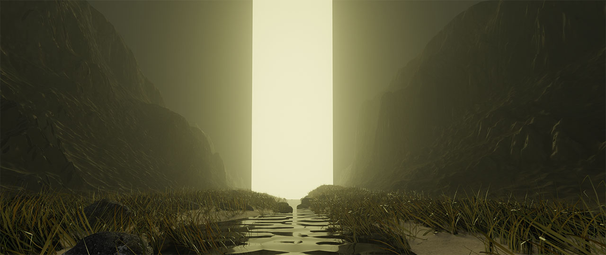

Portal Scene
In this scene, I was intrested in the idea of fantasy at the time, espically magic and portals. I created this scene by just making a landscape, and using volumetric fog to make the light glow from the portal the way it does. Unfortunately, volumetrics are really performance heavy, so this scene, which is really fundamentally simple to make, took a long time to render.